<!doctype html public "-//w3c//dtd html 4.0 transitional//en">
<html>
<head><meta name="viewport" content="height=device-height,width=device-width">
   <meta http-equiv="Content-Type" content="text/html; charset=iso-8859-1">
   <meta name="Author" content="Jeffrey Mishlove">
   <meta name="GENERATOR" content="Mozilla/4.73 [en] (WinNT; I) [Netscape]">
   <title>The Roots of Consciousness: Folklore, Astrology</title>

<!-- google-analytics.com  START  (aync)-->
<script type="text/javascript">

  var _gaq = _gaq || [];
  _gaq.push(['_setAccount', 'UA-15825841-1']);
  _gaq.push(['_trackPageview']);

  (function() {
    var ga = document.createElement('script'); ga.type = 'text/javascript'; ga.async = true;
    ga.src = ('https:' == document.location.protocol ? 'https://ssl' : 'http://www') + '.google-analytics.com/ga.js';
    var s = document.getElementsByTagName('script')[0]; s.parentNode.insertBefore(ga, s);
  })();

</script>
<!-- google-analytics.com  END  -->

<!-- Histats.com  START  (aync)-->
<script type="text/javascript">var _Hasync= _Hasync|| [];
_Hasync.push(['Histats.start', '1,1087503,4,0,150,30,00000000']);
_Hasync.push(['Histats.fasi', '1']);
_Hasync.push(['Histats.track_hits', '']);
(function() {
    var hs = document.createElement('script'); hs.type = 'text/javascript'; hs.async = true;
    hs.src = ('http://s10.histats.com/js15_as.js');
    (document.getElementsByTagName('head')[0] || document.getElementsByTagName('body')[0]).appendChild(hs);
  })();</script>
<noscript><a href="http://www.histats.com" target="_blank"></a></noscript>
<!-- Histats.com  END  -->

</head>
<body>
&nbsp;
<center><table BORDER=0 COLS=1 WIDTH="600" >
<tr>
<td>
<center><font face="Arial,Helvetica"><font size=+2>Astrology</font></font></center>

<p><font face="Arial,Helvetica">The art and science of astrology, which
bridges the ancient and modern worlds, is a very problematic subject. On
the one hand, it has been justly castigated by modern scientists as a throwback
to superstitious thinking. On the other hand, it is an expression of humanity's
perennial yearning for a comprehensive understanding of our unity with
the cosmos.&nbsp;</font>
<p><font face="Arial,Helvetica">I am partially sympathetic with the skeptics
who decry the current interest in astrology as a symptom of scientific
and rational illiteracy. The major claims of traditional horoscope interpretation
lack scientific support.&nbsp;</font>
<p><font face="Arial,Helvetica">The mystery deepens as I (and, no doubt,
many of you) find numerous examples in my own personal life which seem
to validate the horoscope. Quite honestly, while this leads me to suspect
that there is more to astrology than I appreciate, it should also lead
me to further grasp the extent to which my own well-educated mind is subject
to mundane folly and fallibility. To compound matters further, some general
astrological claims as well as some very specific claims have received
clearcut experimental support. On a day to day basis, this tension is both
exciting and uncomfortable.</font>
<p><font face="Arial,Helvetica">Some astrological correlations are self-evident
to everybody. The changing of the seasons which is correlated with the
movement of the sun through the zodiac. The influence of the moon upon
the earth's tides, as well as its the apparent correlation of the lunar
cycle with female menstruation, is well known.&nbsp;</font>
<p><font face="Arial,Helvetica">In fact our language is peppered with astrological
innuendos. When we call an unpredictable person mercurial, we are referring
to the planet, and Roman god, Mercury. If a lustful person is described
as venial, the reference is to the planet, and ancient Roman goddess, Venus.
A lunatic is someone who has fallen under the influence of the moon, or
the Roman goddess personifying the moon (sometimes identified with Diana).
A person who studies the martial arts is engaged in a practice under the
influence of the planet, and Roman god, Mars. When describe a magnanimous
person as jovial, we are making reference to the planet, and Roman god,
Jupiter. To ancient peoples all of these things must have seemed obvious.&nbsp;</font>
<center>
<p>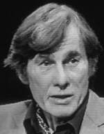
<br><b><font face="Arial,Helvetica"><font size=-1>Theodore Roszak</font></font></b>
<br><font face="Arial,Helvetica"><font size=-2>(courtesy <a href="http://www.thinkingallowed.com/" >Thinking
Allowed Productions</a>)</font></font></center>

<p><font face="Arial,Helvetica">The social critic and historian, Theodore
Roszak, in attempting to understand the persistence of astrology, writes:</font>
<blockquote><font face="Arial,Helvetica">The essential teaching of astrology,
reaching back to the ancient worship of the stars, was that of spiritual
communion between the human and the heavenly....The modern fascination
with astrology -- even in its crudest forms -- stems from a growing nostalgia
for that older, more unified sense of nature in which the sun, moon and
stars were experienced as a vast network of living consciousness. For a
growing number of people, the rich imagery of these old traditions has
become a more inspiration way of talking about emotions, values, motivations
and goals than conventional psychiatry. The astrological universe is, after
all, the universe of Greco-Roman myth, of Dante, Chaucer, Shakespeare,
Milton, Blake. It has poetry and philosophy built into it.&nbsp;</font></blockquote>
<font face="Arial,Helvetica">Some "skeptics" carry their arguments too
far. In attacking astrology's quasi-scientific claims, they often overlook
its cultural relevance as a symbolic language. In 1975, at the time of
the original publication of <i>The Roots of Consciousness</i>, over 180
leading scientists -- including eighteen Nobel Prize winners -- signed
a public letter proclaiming that astrology made invalid and unsupportable
scientific claims.&nbsp;</font>
<p><font face="Arial,Helvetica">Apparently the effort did little to stem
the "rising tide of irrationality" which is the bane of those who proclaim
themselves to be "skeptics." Two years later a Gallup poll reported that
over 30 million Americans believed in astrology.</font>
<p><font face="Arial,Helvetica">When a representative of the BBC wanted
to interview some of these eminent scientists, they declined with the remark
that they had never studied astrology and had no idea of its details. The
inappropriateness of such learned scientists attempting to combat astrology
by using the weight of their academic reputations has been criticized by
the eminent philosopher of science, Paul Feyerabend. Feyerabend suggests
that the fifteenth century Roman Catholic Church made a more cogent argument
against witchcraft (in the classic Malleus Malificarium) than the skeptics
were able to make against the underlying principles of astrology. He poses
an interesting rhetorical question: "Why 186 signatures if one has arguments?"</font>
<center>
<p>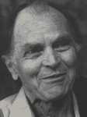
<br><b><font face="Arial,Helvetica"><font size=-1>Paul Feyerabend</font></font></b></center>

<p><font face="Arial,Helvetica">Where does one draw the line? Can both
the proponents and skeptics of astrology be wrong? Feyerabend sums up his
position very eloquently:</font>
<blockquote><font face="Arial,Helvetica">Modern astrology is in many respects
similar to early mediaeval astronomy: it inherited interesting and profound
ideas, but it distorted them, and replaced them by caricatures more adapted
to the limited understanding of its practitioners. The caricatures are
not used for research; there is no attempt to proceed into new domains
and to enlarge our knowledge of extra-terrestrial influences; they simply
serve as a reservoir of naive rules and phrases suited to impress the ignorant.
Yet this is not the objection raised by our scientists. They do not criticize
the air of stagnation that has been permitted to obscure the basic assumptions
of astrology, they criticize these basic assumptions themselves and in
the process turn their own subjects into caricatures. It is interesting
to see how closely both parties approach in other in ignorance, conceit
and the wish for easy power over minds.</font></blockquote>
<font face="Arial,Helvetica">If we can sort out the valid threads from
the superstition in the fabric of astrology, perhaps we will discover potentially
useful clues to understanding the nature of consciousness itself. In fact,
a great deal of Pythagorean wisdom which is largely lost to modern thinking
-- is likely to be embodied in astrology. Perhaps no one has done more
to excavate this understanding than Arthur M. Young, whose work shall be
described later in this discussion of astrology and again in Section IV.
When asked one evening, why he found astrology of relevance today, Young
stated it very simply, "Astrology connects us to the realm of mythos."</font>
<br>&nbsp;
<p><b><font face="Arial,Helvetica">Ptolmaic Astrology</font></b>
<center>
<p>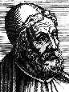
<br><b><font face="Arial,Helvetica"><font size=-1>Claudius Ptolemy</font></font></b></center>

<p><font face="Arial,Helvetica">Ptolemy (110-151 A.D.) who lived in Alexandria
during the neoplatonic era was the ablest mathematician and closest scientific
observer of his day. He made important contributions to trigonometry and
cartography and while his geocentric theory was proven erroneous, it was
well substantiated on the basis of the existing scientific evidence and
in fact held for over one thousand years. He also formulated the principle
(later known as Occam's razor) that one should always use the simplest
hypothesis consistent with the facts. He wrote 21 books on geography, mathematics
and astronomy, as well as four on control of human life by the stars. These
books, known as the <i>Tetrabiblos</i> have formed the substantial base
of all Western astrology since his day, although few modern astrologers
have ever read Ptolemy or understood the caution he urged.</font>
<p><font face="Arial,Helvetica">Ptolemy contended that a certain force
is diffused from the heavens over all things on earth. Yet he recognized
that most applications of astrology were still hypothetical. He also acknowledged
that it was easier to predict events effecting large areas, whole peoples
or cities, rather than individuals. But astrology was not to be rejected
simply because it was difficult to do and only partially accurate any more
than one would reject the art of navigation because ships are frequently
wrecked.</font>
<br>&nbsp;
<p><b><font face="Arial,Helvetica">Kepler and Astrology</font></b>
<center>
<p>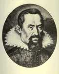
<br><b><font face="Arial,Helvetica"><font size=-1>Johannes Kepler</font></font></b></center>

<p><font face="Arial,Helvetica">In Germany at the beginning of the 17th
century, astrology itself was becoming very controversial. In 1610, the
great astronomer Johannes Kepler published a work that attempted to intervene
in a public conflict between a pastor who issued prognostications and a
physician who had attacked astrology. The title was:</font>
<p><i><font face="Arial,Helvetica">A Warning to Sundry Theologians, Medical
Men and Philosophers that They, while very Properly Overthrowing Stargazing
Superstition, do not Chuck out the Baby with the Bathwater and thereby
Unwittingly Injure Their Profession.</font></i>
<p><font face="Arial,Helvetica">Kepler's reasoned attitude toward astrology
was to try and determine precisely the extent and manner of the influence
of the heavenly bodies upon the earth and its inhabitants. He was very
concerned with revising and reforming the traditional rules of astrology
in accordance with his own observations.</font>
<p><font face="Arial,Helvetica">For example, he condemned the general run
of astrological predictions, maintaining that only one in a hundred was
accurate. He further argued that the division of the zodiac into twelve
signs was also completely arbitrary and irrelevant. Nevertheless, he felt
these could be kept simply as a matter of convenience.</font>
<p><font face="Arial,Helvetica">He emphasized the importance of the aspects,
or angular relations between the different planets--in fact, he added several
aspects of his own invention to those astrologers traditionally used. Modern
experimental workers in astrology have taken a similar position.</font>
<p><font face="Arial,Helvetica">In 1619, Kepler published <i>Harmonice
Mundi</i> in which he described the results of twenty years of astrological
observations. He maintained the degree of harmony of the rays descending
from the heavenly bodies to the earth was a function of their angular relationships.
He described the similarities between planetary aspects and musical consonance
and the effects different configurations of the planets exerted on the
emotional and mental lives of animals and humans. He also observed the
weather's relationship to the planetary aspects. Of particular importance
to him was the influence of the sun and the moon upon the earth. All bodily
fluids waxed and waned with the moon, which was therefore very influential
in the treatment of diseases. And he felt that the nature of planetary
influences were revealed by their colors.</font>
<p><font face="Arial,Helvetica">Kepler reaffirmed the importance of the
positions of the planets at the moment of birth.</font>
<p><font face="Arial,Helvetica">In general there is no expedite and happy
genesis unless the rays and qualities of the planets meet in apt, and indeed
geometric, agreement.</font>
<p><font face="Arial,Helvetica">He even thought that sons, particularly
the first-born, were often born under horoscopes similar to their parents.
This curious hypothesis is also born out by some current research which
will be mentioned in the next chapter.</font>
<p><font face="Arial,Helvetica">Kepler, of course, is best known to modern
science for his laws of planetary motions and his support of the heliocentric
theory of the solar system. He also felt that the sun itself was the soul
of the whole universe, presiding over the movements of the stars, the regeneration
of the elements, and the conservation of animals and plants. To him the
earth was like an animal:</font>
<blockquote><font face="Arial,Helvetica">...[with] the twin faculty of
attracting sea waters into the secret seats of concoction, and of expelling
the vapors which have been thus concocted. By its perception of the celestial
aspects it is stimulated and excited to excrete these vapors with a pleasure
akin to that `which an animal feels in the ejaculation of its semen. Man,
too, is not merely a rational being but is endowed with a natural faculty
like that of the earth for sensing celestial configurations, "without discourse,
without learning, without progress, without even being aware of it.</font></blockquote>
<font face="Arial,Helvetica">Kepler developed his theories on the basis
of explorations into the dimly lit archetypal regions of the mind as surely
as on his mathematical observations of the planetary motions. He was clearly
a student in the tradition of earlier mystic-scientists such as Pythagoras
and Paracelsus.</font>
<br>&nbsp;
<p><b><font face="Arial,Helvetica">Astrology in Contemporary Times</font></b>
<p><font face="Arial,Helvetica">It is on this level that we need to consider
some of the more extreme findings of astrology. Electromagnetic radiations
and solar storm activity can certainly account for certain mass phenomena.
But we cannot expect electromagnetic effects to bear much relationship
to the individual horoscope. Nevertheless, data of this sort exists. Most
of the significant studies are the result of experimentation by Michel
Gauquelin in France which began in the 1940s and continues po the present
day. His results do not vindicate some widely used horoscope claims such
as the reality of zodiacal influences, the meaning of the twelve astrological
"houses," or the role of the "aspects" between planets. (In fact, there
is really no good data supporting the astrological value of sun signs,
moon signs, or any zodiacal signs at all.) What Gauquelin was able to discover
was a weak relationship between the position of planets relative to the
horizon and success in certain professions. This branch of study is sometimes
termed neo-astrology. While, with a few notable exceptions, Gauquelin did
not predict his results in advance, his findings are consistent with the
astrological interpretations of Ptolemy and Kepler. These results are independent
of normal seasonal or circadian factors.</font>
<p><font face="Arial,Helvetica">For example, of 3647 famous doctors and
scientists he studied, 724 were born with Mars just above the eastern horizon
or at the mid-heaven, directly overhead. Since you would only expect 626
men in this sample to have Mars rising or culminating, this effect has
a probability of only 1 in 500,000 of having occurred by chance. In the
same group of individuals, an unusually high number, statistically speaking,
were born with Saturn rising or culminating.</font>
<p><font face="Arial,Helvetica">In a group of 3438 famous soldiers, Jupiter
or Mars were frequently found in the sectors following their rise or culmination.</font>
<p><font face="Arial,Helvetica">In a group of 1409 actors, Jupiter appears
to be more frequent after its rise and superior culmination. In a group
of 1,352 writers, the moon appears more frequently in the key positions
after the rise and superior culmination.</font>
<p><font face="Arial,Helvetica">In a group of 2088 sports champions, Mars
dominates, being recorded 452 times rising or culminating instead of the
expected 358. The probability that this effect could have happened by chance
was only one in five million. Furthermore, this finding was repeated independently
of Gauquelin by a Belgian committee of scientists studying para-conceptual
phenomena.</font>
<p><font face="Arial,Helvetica">The treatment of Michel Gauquilin's astrology
research remains one of the sadder chapters in the history of skeptical
efforts to debunk astrology. A<i> Fate</i> magazine article titled "sTarbaby"
by Dennis Rawlins claimed that the Mars effect was also independently uncovered
in a study by the Committee for the Scientific Investigation of the Claims
of the Paranormal (CSICOP) -- a group normally devoted to skeptical debunking.
Rawlins, a staunch skeptic himself, described in detail how CSICOP chairman
Paul Kurtz obfuscated the evidence in order to avoid the implications of
this embarassing finding. CSICOP, for its part, has attacked the Rawlins
report, claiming that the astrology study was not one of its official activities.</font>
<p><font face="Arial,Helvetica">Interestingly, Gauquilin's data is significant
only when dealing with prominent individuals. No correlations were found
for individuals who did not achieve notable success in their professions.
Furthermore, the correlations do not seem to apply for individuals whose
birth was artificially induced at a certain time in order to conform with
the schedule requirements of the attending physician. Only if the birth
was allowed to occur at its own speed were the astrological correlates
significant. Since an increasing proportion of modern births are artificially
induced (i.e., fewer hospital births take place at 1:20 a.m., such as mine
did), the actual application and opportunity for continued replication
of Gauquilin's "neo-astrology" is extremely limited.</font>
<p><font face="Arial,Helvetica">Although scientists find Gauquilin's findings
very disquieting, increasingly sophisticated analysis seems to confirm,
rather than discomfirm, certain of the original results. For example, in
a 1986 study, the German researcher, Suitbert Ertel, reported:</font>
<blockquote><font face="Arial,Helvetica">A reanalysis of Gauquelin professional
data using alternative procedures of statistical treatment supports previous
Gauquelin results. Frequency deviations from chance expectancy along the
scale of planetary sectors differ markedly between professions.</font></blockquote>
<font face="Arial,Helvetica">Gauquilin himself is very clear that his findings
may be interpreted as completely disproving the claims of conventional
astrology. It is hard to think that his findings have much relevance to
the work of any given astrological interpreter of charts. Even the most
significant correlations applied to less than one-fifth of the population
in his sample. It is a big jump from a few weak, albeit significant, correlations
to the interpretations of thousands of factors on an individual chart.
Astrologers have never been able to explain this process to my satisfaction
and they often are in marked disagreement with each other. The strongest
key to astrology seems to be meanings implicit in the mythological symbolism
of the astronomical names. This is particularly evident when we think of
soldiers being influenced by Mars and Jupiter.</font>
<p><font face="Arial,Helvetica">Using an independent approach, the great
Swiss psychiatrist Carl Jung also conducted studies in astrology.</font>
<center>
<p>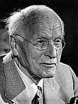
<br><b><font face="Arial,Helvetica"><font size=-1>Carl Gustgav Jung</font></font></b></center>

<p><font face="Arial,Helvetica">In an analysis of 483 pairs of charts from
married couples chosen at random, Jung found a preponderance of aspects
that would signify such a relationship. Most notably the moon of the woman
was found to be in conjunction with either the sun, the moon, or the ascendant
of her husband. A control group of over 32,000 unmarried pairs of charts
did not show these aspects. Statistical analysis indicated the results
obtained could have happened by chance only one time in ten thousand.</font>
<p><font face="Arial,Helvetica">Jung maintained this amazing finding could
be attributed to the role ideas, thought-forms, and archetypes play in
organizing events. He labelled this process synchronicity, an acausal connecting
principle.</font>
<p><font face="Arial,Helvetica">An interesting study recently conducted
in Germany, used horoscopes of "accident-prone persons," -- a group of
car drivers who stand out for having been involved in above-average numbers
of accidents. Aggressive and risky driving styles are among the characteristic
features of accident-prone persons. Current astrology ascribes this kind
of behavior to the planet Mars and Uranus which are expected to turn up
in dominant positions in their horoscopes. For the purpose of an empirical
investigation of this hypothesized relationship, several study groups formed
by the "German Society of Astrologers, Inc." were asked to distinguish
one or two accident-prone persons, on the basis of their horoscopes, from
between one and four persons who were not prone to accidents. Five of six
accident-prone persons were recognized as such; in each case, the solution
was found by a cooperative attempt of all participants. Because of the
small number of tasks, this positive result will require further replication
before it can be considered reliable.</font>
<p><font face="Arial,Helvetica">In 1959, the American psychologist Vernon
Clark conducted a few simple experiments designed to test the accuracy
of astrologers' claims. These studies are often cited by the proponents
of conventional horoscope interpretation. He collected horoscope charts
showing planetary positions at birth, from people in ten different professions.
Half were men and half were women. All were between forty-five and sixty
years of age. The horoscopes were given to twenty different astrologers
together with a separate list of professions; the astrologers were asked
to match them up. The same information was given to another group of psychologists
and social workers who knew little about astrology. Oddly enough, the astrologers
were able to complete their task with a statistically significant accuracy--although
they still made many mistakes. The psychiatrists and social workers scored
no better than chance expectations.</font>
<p><font face="Arial,Helvetica">In another experiment, Clark took ten pairs
of horoscopes, matched for sex and year of birth. To each pair he attached
a list of dates showing important events such as marriage, children, new
jobs, and death. The astrologers were asked to state which of the two horoscopes
in each pair predicted the pattern of events listed. Three of the astrologers
got all ten right and the rest scored significantly above chance -- with
a probability of one in a hundred.</font>
<p><font face="Arial,Helvetica">In a third test, the astrologers were given
ten pairs of charts with no other data to work with. They were asked to
determine which of the two charts indicated that the individual was a victim
of cerebral palsy. Again the astrologers scored well above chance expectations.</font>
<p><font face="Arial,Helvetica">One might attribute the astrologers' success
to ESP. But, for those who are unwilling to credit the validity of horoscopes,
there are other interpretations. For example, it is unclear under what
experimental conditions these studies were conducted. It may be the case
that Clark preselected horoscopes which would match the textbook interpretations
which are taught to astrologers. Unless the horoscopes were selected independently
(using "double blind" experimental procedures) the research would not have
been valid. This criticism was applied by Michel Gauquilin himself with
regard to an ostensibly successful study reported by astrologer Joseph
Vidmar. A number of other studies, based on Vernon Clark's model have failed
to produce positive results.</font>
<p><font face="Arial,Helvetica">An English astrology, Jeff Mayo, conducted
an interesting study in which he correlated astrological sun signs with
personality measures of introversion and extroversion in over 2,000 individuals.
The initial results were remarkable. Individuals with "masculine" sun signs
(Aries, Gemini, Leo, Libra, Sagitarius and Aquarius) scored higher on extroversion
while those with "feminine" sun signs (Taurus, Cancer, Virgo, Scorpio,
Capricorn and Pisces) scored higher on introversion. This study was even
published in a psychological journal, indicating the co-authorship of Hans
J. Eyesenck -- one of Britain's greatest psychologists. However, efforts
to replicate failed to produce significant results. Eyesenck later concluded
that the results were skewed because the individuals taking the personality
tests were beginning astrology students whose tests results were biased
by their identification with new material in astrology that they had learned.
When tests were taken by either advanced astrology students or individuals
ignorant of astrology, the correlations failed to hold.</font>
<p><font face="Arial,Helvetica">When Geoffrey Dean showed a large group
of astrologers what they believed to be British singer Petula Clark's natal
chart, they derived descriptions that tended to match her personality.
Actually, the chart was that of mass murderer Charles Manson. Another astrology
research found, in the popular literature, three publications analysing
John Lennon's natal chart, each postdicting the exact time of Lenon's violent
death. However, each was derived from a different birth time. Such findings
leave little doubt that popular astrologers will interpret a natal chart
in a manner that supports their own preconceptions.</font>
<p><font face="Arial,Helvetica">In 1985, the <i>British Journal of Social
Psychology</i> published three studies testing the astrological doctrine
of aspects -- the angular relationship between the earth and the various
planets, a standard parameter for interpreting planetary influences in
natal astrology. No evidence for the validity of the astrological concepts
was found.&nbsp;</font>
<p><font face="Arial,Helvetica">As was noted earlier, many popular beliefs
relate to the influence of the moon. It is said that more crimes occur
during the full moon and that there are more traffic accidents then. In
1976, Berkeley health feminist Louise Lacey published a study suggesting
that women might use the lunar cycle for purposes of contraception (which
she claimed was influenced by exposure to light). A novel study published
in <i>Social Behavior and Personality</i> tested the lunar-aggression hypothesis
by using the aggressive penalties awarded in ice hockey over a season of
competition. Interpersonal aggression was found to be unrelated to lunar
cycles. These findings suggested that the persistence of lunar believs
might be related to social factors such as expectations and selective exposure.,</font>
<p><font face="Arial,Helvetica">In 1985, Shawn Carlson, then a U.C.L.A.
graduate student in physics, published the results of a carefully controlled
experiment in the prestigious British science journal, <i>Nature</i>. Its
purpose was to give recognized astrologers an opportunity to apply their
craft in a controlled experimental setting to see if they could obtain
accurate information about people they had never met.</font>
<p><font face="Arial,Helvetica">Carlson summarizes his experiment:</font>
<blockquote><font face="Arial,Helvetica">Three recognized expert astrologers
consented to act as advisors on the experiment's design. They also selected
those of their peers they considered sufficiently competent to participate,
made "worst case" predictions for how well their colleagues would do, and
approved the design as a "fair test" of astrology. Twenty-eight of the
ninety astrologers who had been recommended by the advisors agreed to participate.</font>
<p><font face="Arial,Helvetica">Volunteer test subjects took a widely used
and generally accepted personality test, the California Personality Inventory
(CPI), to provide an objective measure of their character traits. The astrologers
chose the CPI as the personality test which came closest to describing
those character traits attributes accessible to astrology. A computer constructed
a natal chart for each subject.</font>
<p><font face="Arial,Helvetica">The experiment consisted of two parts.
In the first, the natal charts were divided up amongst the astrologers.
For each natal chart, the astrologers wrote personality descriptions covering
the material that they felt sure the subjects would be able to recognize
as accurate. The subjects received their own personality descriptions and
two others chosen at random, and were asked to select the description they
felt best fit them. Extensive controls were established to eliminate self-attribution
and other possible biases. If astrology does not work, one would expect
one third of the subjects to select the correct personality descriptions.
The astrologers' own "worst case" prediction was 50% correct.</font>
<p><font face="Arial,Helvetica">In the second test, the natal charts were
again divided up amongst the astrologers. For each natal chart, the astrologers
were given three CPI test results, one of which correctly corresponded
to the given natal chart. They were asked to make a first and second place
choice as to which CPI came closest to matching each natal chart, and rate
how well each fit the natal chart on a one to ten scale. If the natal chart
contains no information about the subject, the astrologers had a one in
three chance of making a given selection correctly. Their worst case prediction
here too was 50% correct.</font>
<p><font face="Arial,Helvetica">The subjects failed to select the correct
personality descriptions more than one third of the time. However, if people
tend not to know themselves very well they would be unable to select the
correct descriptions no matter how well astrology worked. Since the CPI
descriptions are known to be accurate, each subject was asked to select
his or her own CPI from a group of three. Since the subjects were also
unable to do this, their failure to select the correct astrological description
could not be held against astrology.</font>
<p><font face="Arial,Helvetica">However, astrologers' confidence in their
abilities comes from their clients recognizing astrologically derived personality
descriptions as accurate. The subjects' failure here means either that
astrology does not work, or people do not know themselves well enough to
recognize the astrologers' descriptions as accurate when reviewed in a
controlled setting in which two alternate descriptions are also presented.
Either way, these results show that astrologers' faith in their abilities
is unfounded.</font>
<p><font face="Arial,Helvetica">The astrologers failed to match the correct
CPIs to the natal charts. They scored exactly chance and were very far
from their "worst case" prediction of 50%. Even worse, the astrologers
did no better when they rated a CPI as being a perfect fit to a natal chart.
None of the astrologers scored well enough to warrent being retested. Thus,
even though the astrologers started off very confident that they would
pass this test, they failed.</font></blockquote>
<font face="Arial,Helvetica">There are two conclusions which one can draw
from Carlson's study. The first is that 28 astrologers were unable to pass
what they agreed was a fair test of their abilities. The second, which
I regard as most significant, is that the public at large is so lacking
in self-awareness that people are unable to recognize their own personality
profiles as measured by the California Personality Inventory -- one of
the most valid and reliable tests known in psychology. (This may, however,
also be taken as a sad reflection on the present state of personality assessment.)
Before summarizing all of the astrology research, I should point out that
a number of other studies fail to support conventional horoscope interpretations.,,
However, the studies of Gauquilin and of Jung seem to provide weak support
for some of the underlying principles of planetary influence. The findings
will continue to remain on the fringes of science until many of the speculations
are grounded in a mass of incontrovertible data.&nbsp;</font>
<p><font face="Arial,Helvetica">There is some suggestion astrologers (as
well as psychics and metaphysical counselors) may play a role similar to
that played by psychotherapists. Their clients are individuals with real
needs who, nevertheless, do not wish to characterize themselves as having
psychological problems. These ideas were documented recently in the American
Journal of Psychotherapy by extracts from the writings of astrologers as
well as by transcripts of visits to astrologers. With regard to this possibility,
Shawn Carlson comments:</font>
<blockquote><font face="Arial,Helvetica">If an astrologer is a skilled
counselor and a caring person, he/she may be of benefit to his/her clientele.
However, most astrologers have no training in counseling. Many studied
astrology because its unconventionality appealed to their own unconventional
natures. A few are outright charlatans who use astrology as a scam to bilk
the gullible. A person with a real problem is, in my opinion, courting
disaster in seeking astrological counseling. One would be much safer in
the hands of a trained, licensed, respected, reputable counselor.&nbsp;</font></blockquote>
<font face="Arial,Helvetica">In order to safeguard the public against astrological
hucksters and other "paranormalists," Carlson argues that individuals who
charge a fee for the exercise of special occult skills be required to pass
an examination which requires them to demonstrate those skills in a fashion
that precludes trickery or self-deception.&nbsp;</font>
<br>&nbsp;
<p><b><font face="Arial,Helvetica">Astro-Biology</font></b>
<p><font face="Arial,Helvetica">There is a sense in which many terrestrial
phenomena may be influenced by electromagnetic and gravitational effects
originating within the solar system. Such influences, do not support traditional
Ptolmaic astrology. Nevertheless, they may play a role understanding possible
subtle environmental effects upon consciousness. The correlations that
are reported here stand on the edge of scientific respectability and must
be considered more seriously than other claims in Section II.</font>
<p><font face="Arial,Helvetica">The earth's magnetic field changes slightly
according to the solar day, the lunar day, and the lunar month. Geomagnetic
disturbances are particularly correlated with solar storms discharging
large clouds of ionic plasma. These solar eddies generally impinge upon
the earth's magnetosphere about two days after the solar flare causing
polar lights, radio interference, and compression of the earth's magnetic
lines of flux.</font>
<center>
<p>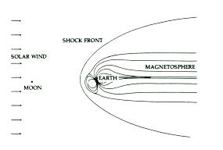
<br><b><font face="Arial,Helvetica"><font size=-1>The magnetic field extending
out around the earth, blown by solar winds away from the sun</font></font></b></center>

<p><font face="Arial,Helvetica">Fluctuations in solar storm activity follow
a cycle averaging 11.2 years and varying from about nine to thirteen years
in length.</font>
<center>
<p>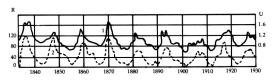
<br><b><font face="Arial,Helvetica"><font size=-1>Relationship between
mean annual magnetic activity (U) and number of sunspots (R).&nbsp;</font></font></b>
<br><b><font face="Arial,Helvetica"><font size=-1>(After A. S. Presman,
<i>Electromagnetic
Fields and Life</i>. New York: Plenum Press, 1970)</font></font></b></center>

<p><font face="Arial,Helvetica">Scientists have correlated solar storm
activity to rates of eart attacks, lung disease, eclampsias, and the activity
of microbes.</font>
<center>
<p>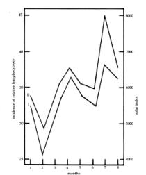
<br><b><font face="Arial,Helvetica"><font size=-1>Solar activity and frequency
of lymphocytoses during 1957 in Sochi, USSR.&nbsp;</font></font></b>
<br><b><font face="Arial,Helvetica"><font size=-1>(After Pressman, p. 199)</font></font></b></center>

<p><font face="Arial,Helvetica">Epidemics of diptheria, typhus, cholera,
and smallpox have also been correlated with solar activity. Much of this
work was done between the two world wars by the Russian Scientist A. L.
Tchijewski. In a huge study he drew up lists of wars, epidemics, revolutions,
and population movements from 500 BC to 1900 and plotted them against curves
of solar activity. He found that 78 percent of these outbreaks correlated
with peaks of solar activity. He also found an amazing assortment of correlating
phenomena ranging from locust hordes in Russia to succession of liberal
and conservative governments in England from 1830 to 1930. Sturgeon in
the Caspian Sea reproduce and then die in masses following cycles of 11
and 33 years which occur during periods of many sunspots (solar storms).
The great financial crisis of 1929 coincided with a peak in solar activity.
Other research has shown correlations between solar activity and the number
of road accidents and mining disasters reported. This may be due to delayed
or inaccruate human reactions in conjunction with very violent solar activity.</font>
<p><font face="Arial,Helvetica">An Italian chemist, Giorgi Piccardi, was
asked to figure out why "activated" water dissolves the calcium deposits
from a water boiler at certain times and not at others. (Activated water
is a vestige of alchemy. A sealed phial containing neon and mercury is
moved around in the water until the neon lights up; there is no chemical
change in the water; however the structure of the molecular bonds are altered
somewhat.) After years of patient research measuring the rate at which
bismuth sulfide becomes a colloid in activated and normal water, Piccardi
showed that this colloid-forming rate varies with sunspot activity. A colloid
solution is one in which the dissolved particles have large enough molecular
weight so that the surface tension of each molecule is of importance in
determining the behavior of the solution. Common colloids are glue, gelatin,
milk, egg white and blood. (The word colloid is derived from the Greek
word kolla, meaning glue.) In general colloidal particles are too big to
pass through membranes which will pass smaller dissolved molecules. The
influence solar activity exerts upon the molecular structure of water is
likely to be even more acute in human organisms as the human body temperature
is fixed near the limit where changes in the structure of water normally
occur.</font>
<p><font face="Arial,Helvetica">Not only are inorganic colloidal suspensions
affected by solar activity, but so is at least one other organic colloid
as well-blood. Research by Dr. M. Takata in Japan, since verified in Germany
and the Soviet Union, indicates that blood samples showing flocculation
(a cloud-like formation) as well as the leucocyte (white blood cell) content
of the blood varies in accordance with solar storm activity. This widespread
solar influence upon all colloidal substances manifests itself in a wide
variety of ways. Individual reaction times, pain felt by amputees, and
the number of suicides all reveal a similar variation in response to sunspots.
Michael Guaquilin lists numerous ways in which the sunspot cycle effects
weather conditions:</font>
<p><font face="Arial,Helvetica">During violent solar eruptions, or at the
time when important groups of sunspots move to the sun's central zone,
a certain number of disturbances occur in our atmosphere, particularly
the aurorae boreales, as a result of the greater ionization in the upper
atmosphere, and magnetic storms, revealed by violent agitation of compass
needles.</font>
<p><font face="Arial,Helvetica">The level of Lake Victoria-Nyanza changes
in accordance with the rhythm of the sunspots, also the number of icebergs,
and famines in India due to lack of rain. The Bulletin Astronomique de
France brought out a very interesting article on the relation between the
activity of sunspots and the quality of Burgundy wines: excellent vintages
correspond with periods of maximum solar activity, and bad vintages with
periods of minimum activity. Douglas, an American, and Schvedov, a Russian,
have observed that the concentric rings formed in the growth of trees have
a period of recurrence of eleven years as well. Finally, there is Lury's
well-known statistical observation that the number of rabbit skins taken
by the Hudson Bay Company follows a curve parallel to that of solar activity.</font>
<p><font face="Arial,Helvetica">On this subject, perhaps the most interesting
study is that carried out on varves. These say Piccardi, are many-layered
deposits of sand or clay which are formed in calm waters, lakes, ponds,
swamps, etc., in glacial zones. A varve's thickness depends on the rainfall
in a given year. Examination of these fossilize deposits in sedementary
rock formed through the geological ages reveals the same inevitable eleven
year cycle in the most distant past.</font>
<p><font face="Arial,Helvetica">F. A. Brown is an eminant biologist who
has advanced the theory that the "biological clock" mechanisms observed
in organisms can be explained by animals being sensitive to various subtle
environmental factors. In addition to demonstrating the influence magnetic
fields exert on a wide variety of living organisms, Brown has also demonstrated
that several organisms including the potato, oyster, fiddler crab, and
rat modify their behavior according to lunar rhythms. The experimental
subjects were enclosed for long periods in hermetically-sealed rooms where
the light, pressure temperature, and humidity were carefully kept constant.</font>
<p><font face="Arial,Helvetica">He also notes that "fluctuations in intensity
of primary cosmic rays entering the earth's atmosphere were dependent upon
the strength of geomagnetism. The magnetic field steadily undergoes fluctuations
in intensity. When the field is stronger, fewer primary cosmic rays come
into the outer atmosphere; when it weakens, more get in." Other researchers
have shown influences on the circadian rhythm of electrostatic fields,
gamma radiation, x-rays, and weak radio waves.,</font>
<p><font face="Arial,Helvetica">Recent years have shown an upsurge of interest
in the ways in which human activity is effected by the remote environment.
Scientists around the world who are doing research in this area have been
meeting under the auspices of the International Society for Biometeorology.
In 1969, the society created a special study group on the "biological effects
of low and high energy particles and of extra-terrestrial factors." On
this committee sit such scientists as F. A. Brown, Giorgi Piccardi and
Michel Gauquilin. Many poorly understood phenomena are now coming under
the scrutiny of respectable members of the scientific community. Gradually
the frontiers of science are being extended into territory that once belonged
to mystics and occultists.</font>
<p><font face="Arial,Helvetica">Perhaps one could think of objects as complicated
concatinations of interpenetrating electromagnetic fields. As far as we
know, all objects in our universe, with a temperature above absolute zero,
are emitting electro-magnetic radiation. In this sense, the alchemical
theories of Alkindi are true.&nbsp;</font>
<br>&nbsp;
<p><b><font face="Arial,Helvetica">Chronotopology</font></b>
<center>
<p>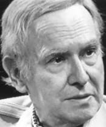
<br><b><font face="Arial,Helvetica"><font size=-1>Charles Muses</font></font></b>
<br><font face="Arial,Helvetica"><font size=-2>(courtesy <a href="http://www.thinkingallowed.com/" >Thinking
Allowed Productions</a>)</font></font></center>

<p><font face="Arial,Helvetica">Dr. Charles Muses -- a mathematician, philosopher,
and computer scientist who died in 2000 -- was author of <i>Destiny and
Control in Human Systems</i> and <i>The Lion Path</i>. Muses has developed
an approach to astrology couched in the language of systems theory. In
a <i>Thinking Allowed</i> interview, he described the theoretical principles
underlying the methodology he has come to refer to as chronotopology --
i.e., studying the structure of time. One has a sense from this discussion
that contemporary astrology is, perhaps, a decadent form of what was once
a philosophically well-grounded and noble pursuit:</font>
<blockquote><font face="Arial,Helvetica">MUSES: The hypothesis of chronotopology
is that whether you have pointers of any kind -- ionospheric disturbances
or planetary orbits -- independently of those pointers, time itself has
a flux, a wave motion.</font>
<p><font face="Arial,Helvetica">MISHLOVE: In quantum physics there's this
notion that the underlying basis for the physical universe are probability
waves -- nonphysical, nonmaterial waves -- underlying everything.</font>
<p><font face="Arial,Helvetica">MUSES: These waves are standing waves.
Actually the wave-particle so-called paradox is not that bad, when you
consider that a particle is a wave packet, a packet of standing waves.
That's why an electron can go through a plate and leave wavelike things.
Actually our bodies are like fountains. The fountain has a shape only because
it's being renewed every minute, and our bodies are being renewed. So we
are standing waves; we are no exception.</font>
<p><font face="Arial,Helvetica">Time is the master control. I will give
you an illustration of that. If you take a moment of time, this moment
cuts through the entire physical universe as we're talking. It holds all
of space in itself. But one point of space doesn't hold all of time. In
other words, time is much bigger than space.</font>
<p><font face="Arial,Helvetica">A line of time is then an occurrence, and
a wave of time is a recurrence. And then if you get out from the circle
of time, which Nietzsche saw, the eternal recurrence -- if you break that,
as we know we do, we develop, and then we're on a helix, because we come
around but it's a little different each time.</font>
<p><font face="Arial,Helvetica">MISHLOVE: Well, now you're beginning to
introduce the notion of symbols -- point, line, wave, helix, and so on.</font>
<p><font face="Arial,Helvetica">MUSES: Yes, the dimensions of time.</font>
<p><font face="Arial,Helvetica">MISHLOVE: Symbols themselves -- words,
pictures -- point to the deeper structure of things, including the deeper
structure of time. I gather that you are suggesting the mind is part of
a nonphysical, mathematically definable reality that can interface and
interact with physical reality, and in which physical reality is embedded.</font>
<p><font face="Arial,Helvetica">MUSES: There can be some things which are
physically effective which are not physical. I can give you an illustration,
a very recondite one, but there is the zero-point energy of the vacuum.
The vacuum is defined in quantum physics as space devoid of radiation or
matter -- no energy, no matter. Yet there is an inherent energy in there
which can be measured -- this is one of the great triumphs of modern physics
-- and that is physically effective.</font>
<p><font face="Arial,Helvetica">MISHLOVE: The energy of a pure vacuum.&nbsp;</font>
<p><font face="Arial,Helvetica">MUSES: Yes. Yet it obviously is not a pure
vacuum. The so-called savage would say to us, "The room is empty, and the
wind is a magic spirit." We know it is air. So we are like the savage in
saying that the vacuum is empty. There is something there.</font></blockquote>
<font face="Arial,Helvetica">Muses, in effect, has been echoing the ancient
claim of the Primordial Tradition that there is a fundamental unity between
the universal mind and the cosmos itself -- including the unfolding of
time. The structure of the relationship between macrocosm and microcosm
is expressed in mathematical, scientific and mythological symbols. It is
the intuitive grasp of these symbols which is ultimately the goal of astrology.&nbsp;</font>
<p><font face="Arial,Helvetica">Such a system must always be larger and
more enduring than any rational attempt to understand or contain it. If
this perspective of astrology is correct, I would predict that rationalists
will forever shun astrology's pseudoscientific face. And, ironically, astrology
and other "superstitions" will persist because the yearning human soul
never be content with rational materialism.</font>
<br>&nbsp;
<p><b><font face="Arial,Helvetica">Arthur M. Young's "Geometry of Meaning"</font></b>
<center>
<p>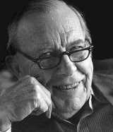
<br><b><font face="Arial,Helvetica"><font size=-1>Arthur M. Young</font></font></b></center>

<p><font face="Arial,Helvetica">A most elegant and brilliant search for
the deep unity of myth, mathematics and morphology is Arthur M. Young's
derivation of a "geometry of meaning" from the angular relationships that
exist between the measure formula of physics. Starting from pure physical
and mathematical relationships, Young has built an elegant theoretical
model that bears an uncanny isomorphism to the twelve signs of the zodiac.</font>
<p><font face="Arial,Helvetica">He begins by plotting the motion of a pendulum
(as a representative of simple harmonic motion--the basis of all wave motion)
over time on a Cartesian coordinate system. The completion of the swing
to the left and its return to A is referred to as a cycle of action whose
halfway point is C.</font>
<p><font face="Arial,Helvetica">The slope of the following curve represents
the rate at which the position of the pendulum or its velocity changes.</font>
<p><font face="Arial,Helvetica">The rate at which the velocity changes
is the acceleration, and the rate at which acceleration changes Young designates
as control. These dimensions can be plotted in a likewise fashion.&nbsp;</font>
<center>
<p>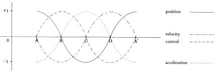</center>

<p><font face="Arial,Helvetica">These curves are all the same shape, but
the curve for velocity is displaced one-fourth of the cycle before the
position curve. The velocity is at 0 when the position is either +1 or
-l. The velocity is at a maximum (in a positive or negative direction)
when the position of the pendulum is at O. The curve for acceleration is
displaced one-fourth of the cycle from the curve of velocity, and one half
of a cycle from the curve of position. Thus when the pendulum's position
is 0, and the velocity is at a maximum, the acceleration is O. The control
curve is displaced one-fourth of a cycle from the acceleration curve and
one-half of a cycle from the velocity. This cycle of action can be represented
as a full circle-with the designations of maximum position, velocity, acceleration,
and control falling on four points 90&oslash; apart.</font>
<center>
<p>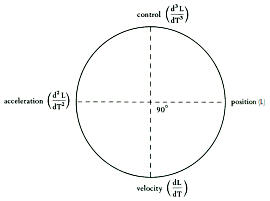</center>

<p><font face="Arial,Helvetica">The fourth positional derivative repeats
the cycle and becomes once more "position" in this scheme. Young maintains
that "these four categories of the measure are necessary and sufficient
for the analysis of motion of a moving body." He also states that there
are fundamental qualitative differences between these measures.</font>
<p><font face="Arial,Helvetica">In order to determine position, we make
an observation--either visually or by some equally direct process. On the
other hand, velocity cannot be observed directly. It must be computed.
It can only be known intellectually. We must make two observations of position,
determine their difference and divide by the time elapsed, obtaining a
ratio. Acceleration can also be computed, but it can be directly and physically
experienced by the knower, through feeling, in a way by which the other
measures cannot be known. Control, or change in acceleration, must be initiated
by an operator. This element is indeterminate and unknowable to an observer.</font>
<p><font face="Arial,Helvetica">The four types of experience derived from
the physical measure formulae now become the basis for another cycle of
action called the learning cycle. This cycle begins with a spontaneous
act, an impulse derived from feeling, and equivalent, Young believes, to
acceleration. Unconscious reaction is the second element of this cycle.
This reaction is based on habits, instincts, or "programming" in the language
of bio-computer theory. It is equivalent to the computations involved in
recognizing velocity. The third element of the cycle is observation and
is equivalent to position, the observable physical factor. The fourth element
of the learning cycle is control.</font>
<p><font face="Arial,Helvetica">An example of the learning cycle would
be a baby reaching out to touch something (spontaneous action). If a hot
object like a flame is encountered, the hand is withdrawn (reaction). Then
there follows observation upon the event. Further exploration consciously
avoids fire until the learned behavior becomes automatically programmed
and spontaneity is resumed. The cycle can be diagrammed:</font>
<center>
<p>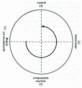</center>

<p><font face="Arial,Helvetica">Young derives a formula for the cycle of
action or learning that leads to consciousness. Note that the distance
from spontaneous action to conscious control is 3/4 of 360o or 3/4 x 2p
which equals 3p/2. The common sense view of the universe is to consider
it shaped like a sphere extending infinitely in all directions. However,
if we multiply the formula for the volume of a sphere (4pr3/3) by Young's
formula for the cycle leading to consciousness, we obtain the formula for
the volume of a a torus (donut) with an infinitely small hole (2p2r3).
This is significant for Young in that the formula for the volume of the
Einstein-Eddington Universe, the boundary region of the so-called hypersphere
is also 2p2r3.</font>
<p><font face="Arial,Helvetica">Young sees in the torus topology a possible
answer to the philosophical problem of the individual (or part, or microcosm)
versus the collective (or whole, or macrocosm). In a toroidal universe,
a part can be seemingly separate and yet connected with the rest. If we
think of the fence as separating the inner from the outer, the torus provides
a paradigm that permits us to see a monad as both separated from the rest
of the universe by the fence and still connected with everything else through
the core. The core of the torus with its infinitely small hole is for Young
a representation of inner consciousness.</font>
<center>
<p></center>

<p><font face="Arial,Helvetica">Young points out that magnetic fields,
vortices, and tornados all have the toroidal form. The vortex is furthermore
the only manner in which a fluid can move on itself. Thus it is a very
suitable shape for the universe to have. However, we must bear in mind
that the volume of the torus is three dimensional and is something akin
to the surface of the four dimensional hypersphere of Eddington and Einstein.</font>
<p><font face="Arial,Helvetica">If we expand upon the "geometry of meaning,"
we can add eight other measure formula of physics for a total of twelve.</font>
<center>
<p>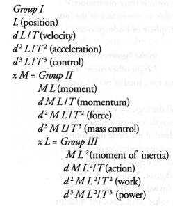
<p>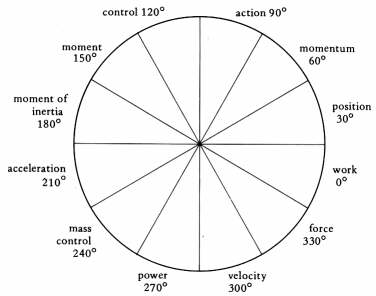</center>

<p><font face="Arial,Helvetica">You will recall the logic by which Young
determined that length (or position) and its three derivatives divided
the circle into four quarters, thus giving the operation of T (time) an
angular value of 90o. Through a process of trial and error, Young found
that by assuming that M (mass) has the value of 120o and L the value 30o,
the measure formula could equally spread around a circle in twelve positions.
No proof is given for this assumption. However, when these values are applied
to the measure formula and incorporated into the cycle of action we do
get the above, symmetrically elegant, results.</font>
<p><font face="Arial,Helvetica">Young then found he could assign the different
astrological signs to the measure formula according to the appropriateness
of the physical and astrological symbolism. Acceleration, at the starting
point of our learning cycle, is equated with Aries, the first sign of the
Zodiac. Mass control is translated into the sign of Taurus, the bull. Gemini,
the sign of knowledge ruled by Mercury, is equated with the physical measure
for power. ("After all," says Young, quoting Francis Bacon "Knowledge is
Power.") The process continues in a way that is rather reasonable from
the standpoint of astrology, if not outrageous to physicists. The results
are:</font>
<center>
<p>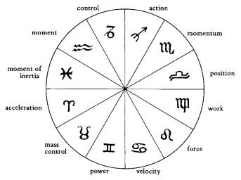</center>

<p><font face="Arial,Helvetica">The preceding diagram is Young's "Rosetta
Stone," a diagram and subject treated at length in his book <i>The Geometry
of Meaning.</i> Its significance lies beyond the traditional realms of
either astrology or physics. It may be a perfectly useless intellectual
"bead game." On the other hand, it points toward the unification of symbolic
meaning with mathematical manipulation. It provides a comprehensive metaphor
with which to describe the processes of consciousness. It is also suggestive
of a metasystem within which one can integrate the diverse disciplines
of human endeavor. Such synergistic approaches are necessary in order to
apply the vast resources of our information explosion to the social problems
confronting us.</font>
<p><font face="Arial,Helvetica">Young's theory fits within the context
of historical cosmological speculations beginning with Pythagoras. In earlier
cultures, psi phenomena were generally incorporated in the prevailing world
view with a great deal of eloquence, if not rational lucidity. They were
thought to stem from the heavenly hierarchies and celestial realms believed
to interpenetrate or transcend all gross matter. However, in the attempt
to be empirically grounded, modern cosmologists in rejecting supernatural
elements have also unthinkingly rejected psi. Consciousness itself has
been left out of the scientific picture. Something of an operational substitute
has been provided by observable behavior.</font>
<p><font face="Arial,Helvetica">Arthur Young has attempted to bridge this
gap by developing a modern, scientific meta-theory within which one can
account for human consciousness and process, including the data of parapsychology.
What such a theory leads to is a wholistic view of the universe, oneself,
and humankind.</font>
<p><font face="Arial,Helvetica">Arthur Young was the founder of the Institute
for the Study of Consciousness located in Berkeley, California. The focus
of the institute is primarily intellectual or gnostic. It operates under
Young's precept that a true understanding of the universe can only be grasped
through the exercise of one's full human capacities.</font>
<br>&nbsp;
<p><b><font face="Arial,Helvetica">Concluding Thoughts on Astrology</font></b>
<p><font face="Arial,Helvetica">How ironic that Arthur Young's Rosetta
Stone would seem to provide a mathematical/physical foundation for the
somewhat discredited mythical signs of the Zodiac. On one hand, Young's
"geometry of meaning" falls firmly within the Pythagorean tradition. In
principle, he seems to be digging into a mathematical structure that offers
the potential to unify the mythic-subjective and the scientific-objective
aspects of consciousness. This is a quest and a theme to which we will
return again and again. However, when one looks at the research in astrology,
particularly that of Gauquilin, it seems that the planets and houses fare
the best -- while little empirical support is offered for the Zodiacal
signs.</font>
<p><font face="Arial,Helvetica">To be sure, Arthur Young himself is not
disconcerted by this turn of events. He does not view his work as a theory
to be fitted within the structure of science. Rather he sees it as a paradigm
or model which encompasses science and mythology. From Young's perspective,
astrology is not a science. It is a language beyond science that connects
us to the realm of mythos. It's validity is ideosyncratic. It deals with
the uniqueness of individuals and their connection to the mysterious realm
of the gods.</font>
<p><font face="Arial,Helvetica">If we view astrology as an ancient folk
tradition, we may say that it is derived from several sources: the deep
mathematics of Pythagoras, the numenous realm of mythology, the cycles
of the seasons and agriculture, the ecology of consciousness, the uncanny
planetary influences documented by Gauquilin and his critics, as well as
the human need for certainty in the face of the unknown. One might well
also add the human propensity for folly.</font>
<p><font face="Arial,Helvetica">In dealing with astrology, as well as in
dealing with so much more than will be discussed, the one character trait
that will most adequately serve us is the ability to tolerate ambiguity.
Of course, as any astrologer can tell you, some of us have this trait in
greater proportion than others. (If it didn't come rather naturally to
me, I doubt whether I would be able to write this book at all.) As psychologist
Charles Tart is fond of saying, "I do not believe in astrology; but then,
people of my sign never do."</font>
<p><font face="Arial,Helvetica">Tart's statement reflects an attitude of
humor and irony which is an essential prerequisite for intelligent, sensitive
exploration into the murky waters of consciousness.&nbsp;</font>
<br>&nbsp;
<br>&nbsp;
<br>
<br>
<center>
<p><b><font face="Arial,Helvetica">References</font></b></center>

<p><font face="Arial,Helvetica">. Theodore Roszak, <i>Why Astrology Endures:
The Science of Superstition and the Superstition of Science</i>. San Francisco:
Robert Briggs Associates, 1980.</font>
<p><font face="Arial,Helvetica">. Paul Feyerabend, <i>Science in a Free
Society</i>. London: NLB, 1978.</font>
<p><font face="Arial,Helvetica">. Ibid., p. 96.</font>
<p><font face="Arial,Helvetica">. Lynn Thorndike, op. cit., Vol. VII, 11-32.</font>
<p><font face="Arial,Helvetica">. Wolfgang Pauli, "The Influence of Archetypal
Ideas on The Scientific Theories of Kepler," in <i>The Interpretation of
Nature and The Psyche</i>. New York: Pantheon, 1955. Pauli, a Nobel laureate
physicist, was one of the first to inquire into the quantum physics of
consciousness. He was known throughout Europe for the poltergeist-like
effects which he seemed to have on laboratory equipment (the "Pauli effect").
Pauli studied with Carl Jung who contributed his important essay on synchronicity
to this volume.</font>
<p><font face="Arial,Helvetica">. Michel Gauquelin, <i>Birthtimes</i>.
New York: Hill and Wang, 1983.</font>
<p><font face="Arial,Helvetica">. Dennis Rawlins, "sTarbaby," <i>Fate</i>,
October 1981, pp. 67-98.&nbsp;</font>
<p><font face="Arial,Helvetica">. Michel Gauquelin, <i>Cosmic Influences
on Hunman Behavior</i>, trans. by Joyce E. Clemow. New York: Stein &amp;
Day, 1973.&nbsp;</font>
<p><font face="Arial,Helvetica">9. Ertel, Suitbert. "Scientific quality
and progressive dynamics within the Gauquelin paradigm," <i>Zeitschrift
fur Parapsychologie und Grenzgebiete der Psychologie</i>, 28(1/2), 1986,
pp. 104-135.</font>
<p><font face="Arial,Helvetica">. Gauquilin, <i>Birthtimes</i>. p. 141.</font>
<p><font face="Arial,Helvetica">. Carl Gustav Jung, "Synchronicity: An
Acausal Connecting Principle," in <i>The Interpretation of Nature and The
Psyche</i>. New York: Pantheon, 1955, pp. 60-94. Jung's arduous discussion
of an important philosophical concept is illustrated by his astrology experiment.</font>
<p><font face="Arial,Helvetica">. Walter Boer, Peter Niehenke &amp; Ulrich
Timm, "Can 'Accident-Prone Persons' Be Diagnosed in Terms of Astrology?
An Exploratory Experiment," <i>Zeitschrift fur Parapsychologie und Grenzgebiete
der Psychologie</i>, 28(1/2), 1986, 65.</font>
<p><font face="Arial,Helvetica">. John A. West &amp; Jan G. Toonder, <i>The
Case for Astrology</i>. Baltimore: Penguin Books, 1973, pp. 204-209.</font>
<p><font face="Arial,Helvetica">. J. E. Vidmar. "Astrological Discrimination
Between Authentic and Spurious Birthdates," <i>Cosmology Bulletin</i>,
8/9, 1979.</font>
<p><font face="Arial,Helvetica">. Nona Press, "Suicide in New York." <i>Journal
of the National Council of Geocosmic Research,</i> 3, 1978.</font>
<p><font face="Arial,Helvetica">. J. Mayo, O. White &amp; H. J. Eyesenck,
"An empirical study of the relation between astrological factors and personality,"
<i>Journal
of Social Psychology</i>, 105, 1978, 229-36.</font>
<p><font face="Arial,Helvetica">. Eysenck, Hans Jurgen. "Scientific Research
in Astrology and the Demand for 'Naive' Subjects." <i>Zeitschrift fur Parapsychologie
und Grenzgebiete der Psychologie</i>, 23(2), 1981, 89-93.</font>
<p><font face="Arial,Helvetica">. Geoffrey A. Dean, "Planets and Personality
Extremes," <i>Correlation</i>, 1(2), 15-18.</font>
<p><font face="Arial,Helvetica">. P. Niehenke, "The Whole is More than
the Sum of Its Parts," <i>Astro-Psychological Problems</i>, 1(2), 33-37.</font>
<p><font face="Arial,Helvetica">. Michael Startup, "The Astrological Doctrine
of 'Aspects': A Failure to Validate With Personality Measures," <i>British
Journal of Social Psychology</i>, 24, 1985, 307-315.</font>
<p><font face="Arial,Helvetica">. Louise Lacey, <i>Lunaception: The New
Revolutionary Natural Way to Control Your Body, Your Life and Your Fertility</i>.
New York: Warner Books, 1986.</font>
<p><font face="Arial,Helvetica">. Gordon W. Russell, &amp; Jane P. de Graaf,
"Lunar cycles and Human Aggression: A Replication," <i>Social Behavior
and Personality</i>, 13(2), 1985, 143-146.</font>
<p><font face="Arial,Helvetica">. George O. Abell &amp; Bennett Greenspan,
"The Moon and the Maternity Ward," <i>Skeptical Inquirer</i>, III(4), Summer
1979, pp. 17-25. This article challenges the notion that birthrates correlate
with the phases of the moon and also offers additional evidence countering
the alleged correlation of suicide and homocide rates with lunar cycles.</font>
<p><font face="Arial,Helvetica">. Carlson, Shawn, "A Double Blind Test
of Astrology," <i>Nature</i>, 318, December 5, 1985, 419-425.</font>
<p><font face="Arial,Helvetica">. D. H. Saklofske, I. W. Kelly, &amp; D.
W. McKerracher. "An Empirical Study of Personality and Astrological Factors,"
<i>Journal
of Psychology</i>, 11, 1982, 275-280. An examination of certain hypothesized
relationships between zodiac signs and personality among 214 students finds
none. "There were no sgnificant differences between subjects classified
according to odd vs. even sign and the personality dimensions of extraversion,
neuroticism, and psychoticism. Neuroticism scores were not significantly
different between subjects classified according to water and nonwater signs."</font>
<p><font face="Arial,Helvetica">. Michel Gauquilin, "Zodiac and Personality:
An Empirical Study." <i>Skeptical Inquirer</i>, VI(3), Spring 1982, 57-65.</font>
<p><font face="Arial,Helvetica">. Douglas P. Lackey, "A Controlled Test
of Perceived Horoscope Accuracy," <i>Skeptical Inquirer</i>, VI(1), Fall
1981, 29-31. People rate "placebo" horoscopes to be as accurate as their
own.</font>
<p><font face="Arial,Helvetica">. Lester, David. "Astrologers and Psychics
as Therapists," <i>American Journal of Psychotherapy</i>, 36(1), January
1982, 56-66.</font>
<p><font face="Arial,Helvetica">. Shawn Carlson, private communication,
October 6, 1989.</font>
<p><font face="Arial,Helvetica">. Michel Gauquelin, <i>The Scientific Basis
of Astrology.</i> New York: Stein &amp; Day, 1969. pp. 198-211. Tchijewsky's
work is not to my knowledge available, in English.</font>
<p><font face="Arial,Helvetica">. Ibid., pp. 211-221. Further information
is available in G. Piccardi, <i>The Chemical Basis of Medical Climatology.</i>
Springfield, IL: Charles C. Thomas, 1963.</font>
<p><font face="Arial,Helvetica">. Ibid.</font>
<p><font face="Arial,Helvetica">. Ibid. pp. 222-231. For further reference
Gauquelin cites Takata's article in <i>Helvetica Medica Acta</i>, 1950.</font>
<p><font face="Arial,Helvetica">. Ibid., pp. 183-184.&nbsp;</font>
<p><font face="Arial,Helvetica">. F. A. Brown, J. Woodland Hastings &amp;
John D. Palmer, <i>The Biological Clock--Two Views</i>. New York: Academic
Press, 1970. In addition to discussing Brown's evidence of biological rhythms
being tied to astronomical cycles, this book discusses the theory of an
internally controlled timing mechanism. Both views are necessary for an
overall understanding of bio-rhythms.</font>
<p><font face="Arial,Helvetica">. G. Edgar Folk, <i>Environmental Physiology.</i>
Philadelphia: Lea &amp; Febiger, 1966. p. 62.</font>
<p><font face="Arial,Helvetica">. Michel Gauquelin, op. cit., p. 48. Gauquelin
refers to J. H. Heller &amp; A. A. Teixeira-Pinto, "A New Physical Method
of Creating Chromosomal Aberrations," <i>Nature</i>, No. 4645, 1959.</font>
<p><font face="Arial,Helvetica">. Charles Muses, Time and Destiny (#S460),
in New Pathways in Science (#Q134), videotapes available from Thinking
Allowed Productions. For further information write to 2560 Ninth Street,
Suite 123, Berkeley, CA 94710 or phone (510) 548-4415.</font>
<p><font face="Arial,Helvetica">. Arthur M. Young, <i>The Geometry of Meaning</i>.
New York: Delacorte, 1975.</font>
<p><font face="Arial,Helvetica">. In the early 1970s, Arthur M. Young &amp;
Charles Muses worked together as editors of <i>The Journal for the Study
of Consciousness</i> and the anthology <i>Consciousness and Reality</i>.</font></td>
</tr>
</table></center>

<center><b><font face="Arial,Helvetica"><font size=-1> 
 </font></font></b>
<br><b><font face="Arial,Helvetica"><font size=-1> 
 </font></font></b><a href="../index.html" ></a>
<p><b><font face="Arial,Helvetica"><font size=-1><a href="../index.htm" >Return
to <i>Roots of Consciousness</i> Contents</a></font></font></b></center>

</body>
</html>
